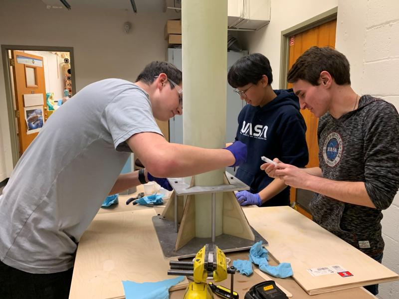
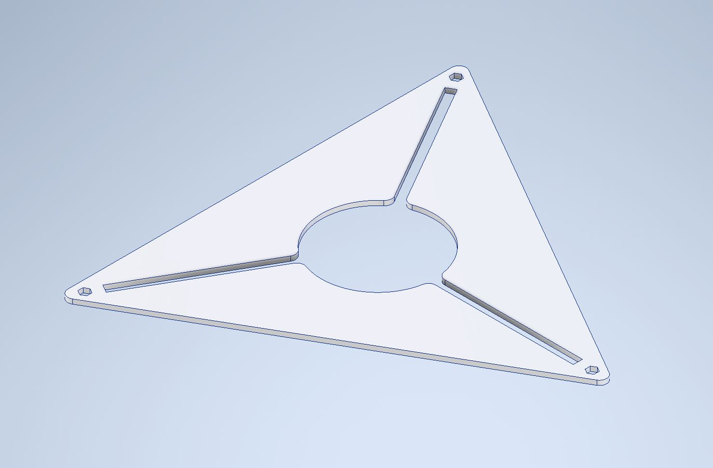
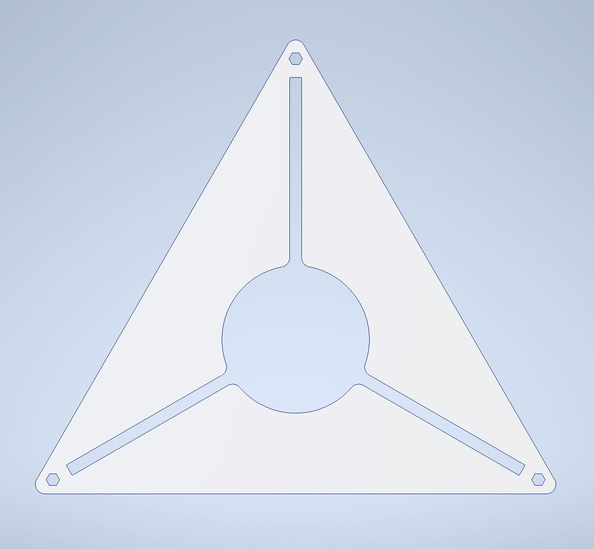
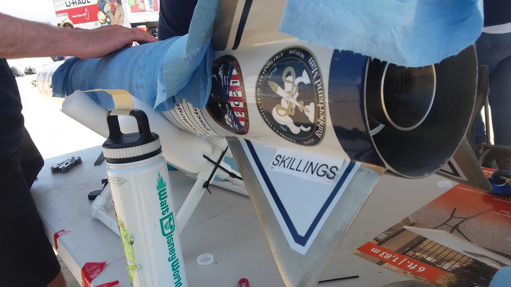

Fin
Jig

This project is a simple one, but I take pride in it as it was the first part I ever created for Georgia Tech Experimental Rockery.
The jig itself is made up of two plates with cutouts that match the shape of the fins at different lengths along their chord. The two plates are bolted together with spacers, and together they force the rocket fins against the side of the airframe during adhering.


I created the files for the jigs in solidworks and exported their faces to our waterjet before sandblasting the final product. From 2019-2021, the jig helped a total of 8 fins adhere to our rocket’s airframes, all of which survived our summer 2021 flight without issue.
